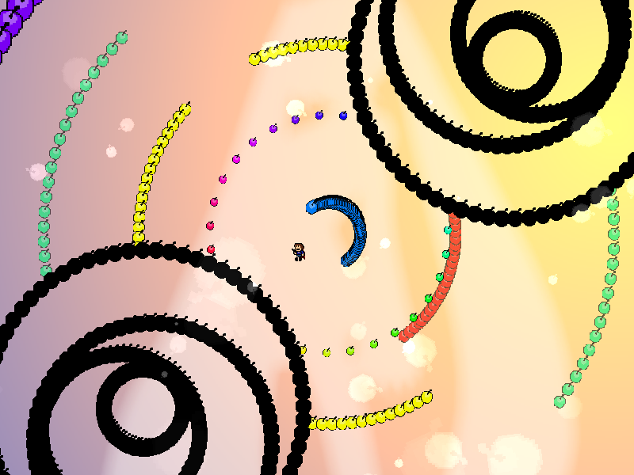
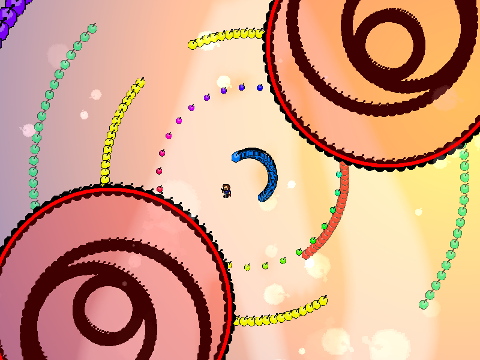
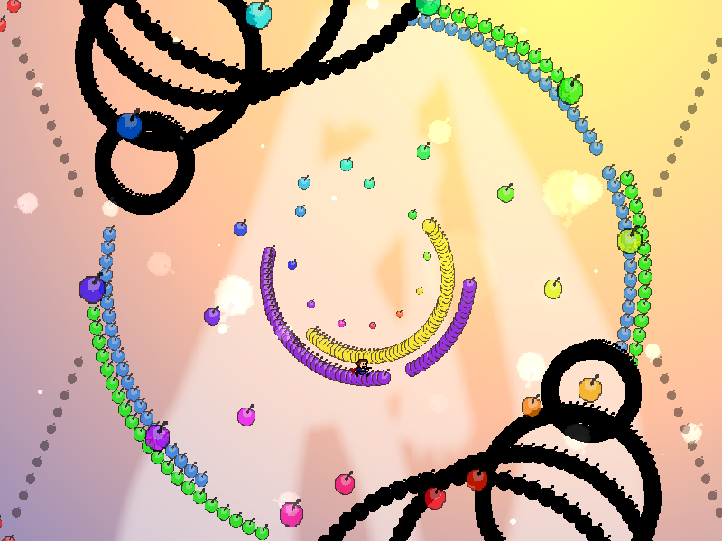

| creator | segment | label | jump |
|---|---|---|---|
| NN | 0:01.50~0:08.10 | R/R | infinite |
反復型の弾幕です。
円弧状弾幕が半円状に収束した際の角度を予測することを目的としています。
画面中央を中心として画面外から周期的に生成される円弧状弾幕に関して、これらは円周の1/6に対応する3つの部分により構成されており、そのそれぞれに対して初期角度、角速度、回転方向が一定の条件のもとランダムに決定されます。
それぞれの円弧状弾幕について、生成から70step経過後に半径が一定の値を下回った時点で半円状に収束した状態で回転が停止し、また生成から90step経過後に中心に対して折り返した時点で当たり判定がなくなります。
なお、これらの形状を予測する上で、外周を回転する黒色の円形弾幕の内側領域に位置している部分について視認不可能となる点に注意が必要です（fig.1-1.1）。

また、0:07.10においてすべての円弧状弾幕に関して当たり判定がなくなることを利用することで攻略がしやすくなるかもしれません（fig.1-1.2）。
